1.1. 广义线性模型¶
下面将要介绍的这些方法主要被用于解决回归问题。在线性回归问题中，目标变量被认为是 输入变量的线性组合。用数学语言表示如下： 如果 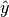 是回归模型的预测值，那么
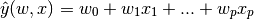
在整个模块中，我们指定向量
 作为线性系数
作为线性系数 coef_ 以及 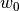
作为截距 intercept_.
如果要用广义线性模型去执行分类任务，则要用Logistic回归 ( Logistic regression.).
1.1.1. 普通最小二乘法¶
LinearRegression
使用系数
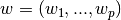
拟合一个线性模型以使得观测响应与预测响应之间的残差平方和达到最小。
所谓观测响应是指来自数据集的
目标变量的值，而预测响应则是指由拟合得到的回归方程在对应的输入变量处给出的目标变量的预测值。
以上的文字描述变成数学表述，就是这样的：
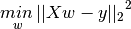

LinearRegression
的成员方法 fit接受数组参数 X, y
并将计算出的线性模型的系数
 存放在他的成员变量
存放在他的成员变量
coef_ 中:
>>> from sklearn import linear_model
>>> clf = linear_model.LinearRegression()
>>> clf.fit ([[0, 0], [1, 1], [2, 2]], [0, 1, 2])
LinearRegression(copy_X=True, fit_intercept=True, n_jobs=1, normalize=False)
>>> clf.coef_
array([ 0.5, 0.5])
然而，普通最小二乘法的系数估计依赖于模型的条件的独立性.
当模型条件存在相关性以及设计矩阵 的各个列之间存在近似的线性依赖时，设计矩阵就会变得越来越奇异(singular)。
这将会导致LS的估计对观测响应中的随机误差非常的敏感，从而产生很大的方差。
这种多重共线性(multicollinearity)的情形时常会出现在比如没有经过
仔细的实验设计就获得的观测数据中。
的各个列之间存在近似的线性依赖时，设计矩阵就会变得越来越奇异(singular)。
这将会导致LS的估计对观测响应中的随机误差非常的敏感，从而产生很大的方差。
这种多重共线性(multicollinearity)的情形时常会出现在比如没有经过
仔细的实验设计就获得的观测数据中。
1.1.2. 岭回归¶
Ridge
回归通过在回归系数上强制加入一个惩罚因子解决了
Ordinary Least Squares
中存在的一些问题。岭系数是通过最小化带有惩罚因子的残差平方和求解的：
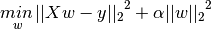
其中, 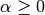
是一个用于控制回归系数缩减量的复杂度参数：
 的值越大, 回归系数的缩减量就越大并且回归系数也会因此对观测数据的共线性更加鲁棒。
的值越大, 回归系数的缩减量就越大并且回归系数也会因此对观测数据的共线性更加鲁棒。
和其他线性模型一样, Ridge
的成员方法fit 以数组
X, y 为输入参数，并且将估计出的线性模型的回归系数
存放在它的成员变量 coef_ 中:
>>> from sklearn import linear_model
>>> clf = linear_model.Ridge (alpha = .5)
>>> clf.fit ([[0, 0], [0, 0], [1, 1]], [0, .1, 1])
Ridge(alpha=0.5, copy_X=True, fit_intercept=True, max_iter=None,
normalize=False, random_state=None, solver='auto', tol=0.001)
>>> clf.coef_
array([ 0.34545455, 0.34545455])
>>> clf.intercept_
0.13636...
1.1.2.2. 设置正则化参数: 广义交叉验证¶
RidgeCV
实现了对alpha参数进行交叉验证的岭回归算法。该对象的工作原理与网格搜索交叉验证GridSearchCV的原理是一样的
，但是它使用了广义交叉验证(GCV)--一个有效的留一法交叉验证(leave-one-out cross-validation)形式。
>>> from sklearn import linear_model
>>> clf = linear_model.RidgeCV(alphas=[0.1, 1.0, 10.0])
>>> clf.fit([[0, 0], [0, 0], [1, 1]], [0, .1, 1])
RidgeCV(alphas=[0.1, 1.0, 10.0], cv=None, fit_intercept=True, scoring=None,
normalize=False)
>>> clf.alpha_
0.1
参考文献
- “Notes on Regularized Least Squares”, Rifkin & Lippert (technical report, course slides).
1.1.3. Lasso¶
Lasso
是一个用于估计稀疏系数的线性模型。由于此模型偏向于输出那些具有较少参数的解，
而且能够有效的压缩与给定问题有依赖关系的变量的数目，所以它在某些情景下非常有用。
正因为这个原因，Lasso和它的各种变体是压缩感知领域的基础。在某些条件下，它可以恢复
非零权重的精确集合(see
压缩感知: 使用L1 prior进行断层重建 (Lasso))。
用数学语言表述, 它是由带有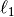 prior的正则化因子的线性模型构成，其目标函数是去最小化下式：
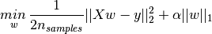
因此，Lasso的估计过程是去求解一个带有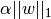
的惩罚因子的最小二乘模型的最小化问题。其中，
是一个常数；
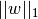
是参数向量的范数。
对于类Lasso
的实现采用的是坐标下降法(coordinate descent)来拟合回归系数。
另外还有一种实现方法，请看
最小角回归(LAR)。
>>> from sklearn import linear_model
>>> clf = linear_model.Lasso(alpha = 0.1)
>>> clf.fit([[0, 0], [1, 1]], [0, 1])
Lasso(alpha=0.1, copy_X=True, fit_intercept=True, max_iter=1000,
normalize=False, positive=False, precompute=False, random_state=None,
selection='cyclic', tol=0.0001, warm_start=False)
>>> clf.predict([[1, 1]])
array([ 0.8])
Also useful for lower-level tasks is the function lasso_path
that computes the coefficients along the full path of possible values.
1.1.3.1. 设置正则化参数¶
正则化参数 alpha
控制着Lasso估计出的回归系数的稀疏程度。
1.1.3.1.1. 使用交叉验证¶
scikit-learn暴露了用交叉验证来设置Lasso的正则化参数alpha
的一些对象： LassoCV
以及 LassoLarsCV。
LassoLarsCV是基于
最小角回归（LAR）算法的。
对于存在很多共线回归因子的高维数据集，LassoCV
在大多数时候都是比较好的。
然而，LassoLarsCV
的优点是探索更多的alpha参数的相关值，并且 如果相比观察的数量，样本的数量是非常小的时候，她总是比
LassoCV快很多。
1.1.3.1.2. 基于信息准则的模型选择¶
作为除交叉验证之外的另一种方法，估计器对象
LassoLarsIC
提出使用 Akaike信息准则(AIC)和贝叶斯信息准则(BIC)。因为使用K-fold交叉验证时正则路径只计算一次而不是K+1次，
所以这些准则是一个计算上更便宜的替代品,以找到最佳的α.
然而，这样的准则需要对解
的自由度做一个适当的估计。该估计是来自大样本（渐近结果），并假设该模型是正确的（即这些数据
确实是由假设的模型产生的）。当待求解的问题的条件数很差的时候（比如特征个数
大于样本数量的时候），这些准则就会有崩溃的风险
1.1.4. 弹性网¶
弹性网(ElasticNet)
是一个附加了两部分正则化项L1和L2的线性模型。L1与L2的组合允许我们学习一个稀疏模型，其中只有少数的回归系数
是非零的，像Lasso一样,
与此同时它仍然可以保持Ridge的正则化特性。
我们使用l1_ratio 参数控制L1和L2的凸组合。
当有多个相互关联的特征时，弹性网是非常有用的。Lasso可能随机的选择一个，而弹性网可能把两个 都挑选上。
在Lasso和Ridge之间折中的一个实用的优势是允许弹性网继承一些Ridge在旋转情况下的稳定性。
在弹性网模型中，我们要最小化的目标函数如下所示：
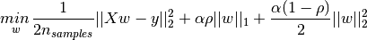
这个类 ElasticNetCV
可以通过交叉验证来设置参数
alpha
()
以及 l1_ratio
( )。
)。
1.1.5. 多任务 Lasso¶
多任务Lasso MultiTaskLasso
是一个用于联合估计多元回归问题的稀疏系数的线性模型： y
是一个2D 数组,其shape为(n_samples, n_tasks). 该问题的约束是被选中的那些特征对所有回归问题都必须是一样的。
因此也被称为 tasks.
下图比较了由简单Lasso与MultiTaskLasso所获得的回归系数中非零系数的位置。 简单Lasso估计产生一系列分散的非零系数，而MultiTaskLasso产生的非零系数是充满整列的(full columns)。
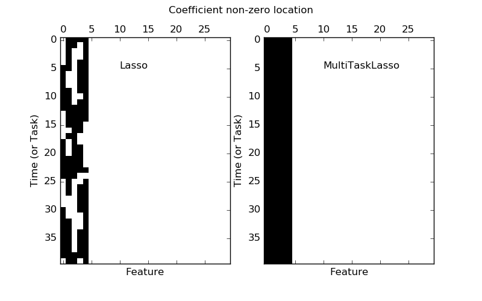 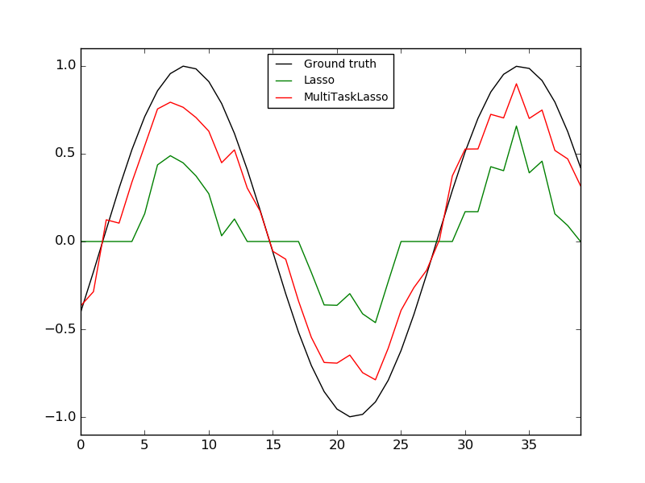
拟合一个时间序列模型, imposing that any active feature be active at all times.
从数学角度看，它是一个附加了混合
 prior作为正则化项的线性模型.
我们要最小化的目标函数是：
prior作为正则化项的线性模型.
我们要最小化的目标函数是：
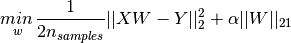
其中;
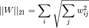
MultiTaskLasso
类的实现使用了坐标下降法来拟合回归系数。
1.1.6. 最小角回归（LAR）¶
最小角回归（LARS）是一个用于高维数据的回归算法。
LARS的优点是:
- 当p>>n时，它是数值高效的。 (i.e., 也就是维数的数量显著的大于样本点)
- 它计算起来像forward selection一样快，并且具有与普通最小二乘法一样的复杂度。
- 它产生一个完整的分段线性的解决方案路径，这在交叉验证或类似的模型调整中是有用的。
- 如果两个变量与响应有着几乎同样的相关性，那么他们的系数也应该以近似相同的速率 增加。该算法在这种情况下的行为表现与我们的直觉期望是符合的，而且也更加的稳定。
- 他可以被很容易的修改用来产生其他estimators的解，例如 Lasso的解。
LARS的缺点是:
- 因为LARS是基于迭代的残差再拟合，它可能会对噪声的影响比较敏感。这一问题 在Efron et al. (2004) Annals of Statistics article.中有详细的讨论。
LARS 模型的使用，既可以用Lars类,
也可以用更底层的实现 lars_path.
1.1.7. LARS Lasso¶
LassoLars
是一个用LARS算法实现的Lasso模型。与基于坐标下降法(coordinate_descent)的实现不一样，这个版本的
Lasso产生精确的解。该解是做为回归系数的范数的分段线性函数。
>>> from sklearn import linear_model
>>> clf = linear_model.LassoLars(alpha=.1)
>>> clf.fit([[0, 0], [1, 1]], [0, 1])
LassoLars(alpha=0.1, copy_X=True, eps=..., fit_intercept=True,
fit_path=True, max_iter=500, normalize=True, positive=False,
precompute='auto', verbose=False)
>>> clf.coef_
array([ 0.717157..., 0. ])
Lars算法提供回归系数沿着正则化参数的完整路径，因此一个共同的操作是
由使用函数lars_path
检索路径所组成的。
1.1.7.1. 数学表述形式¶
该算法与前向逐步回归方法有些相似，但是它不会在每一步都包含变量，估计出的参数沿着一个方向 增加。该方向equiangular to each one’s correlations with the residual.
与给出一个向量结果不同，LARS的解是由一个曲线构成。该曲线代表了与参数向量的L1范数的每一个值
所对应的解。全部回归系数路径被存储在一个数组
coef_path_中,
该数组的size是(n_features, max_features+1). 第一列总是等于0。
参考文献:
- Original Algorithm is detailed in the paper Least Angle Regression by Hastie et al.
1.1.8. 正交匹配追踪(OMP)¶
OrthogonalMatchingPursuit
和 orthogonal_mp
实现了OMP算法，用于近似拟合一个对非零回归系数(ie. the L 0 pseudo-norm)的个数进行约束的线性模型。
作为一个像 Least Angle Regression的前向特征选择方法,正交匹配追踪可以逼近 一个具有固定数量的非零元素的最优解向量。如下所示：
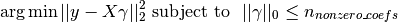
或者,正交匹配追踪可以以某个指定的误差为目标而不是以非零元素的数量为目标。这可以表述如下：
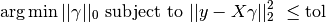
OMP基于一个贪婪算法，该算法在每一步都把与当前残差最高度相关的atom包括进来。 OMP与简单匹配追踪有些相似，但是在每一迭代步表现的更好。OMP的每一个迭代步上，残差被 重新计算通过在之前选择的元素上使用正交投影。
参考文献:
1.1.9. 贝叶斯回归¶
贝叶斯回归技术可以用于在估计过程中包含正则化参数：此处正则化参数不再是人为设置的硬集合，而是 根据训练数据进行调整。
这可以通过在模型的超参数上引入 uninformative priors
来实现。Ridge Regression当中所使用的
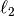
正则化项等价于在参数
服从高斯先验分布的条件下
以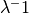的精度
寻找最大后验解。
与手动设置lambda的值的那些方法不一样，贝叶斯回归把lambda看作是一个随机变量
并且从数据中估计出该参数的分布规律。
为了获得一个完整的概率模型, 输出 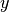 被假定为服从围绕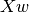 的高斯分布。
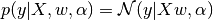
Alpha 也被看作是一个需要从数据中估计得到的随机变量。
贝叶斯回归的优点是:
- 它适应于所给定的数据.
- 它可以将正则化参数的确定也包括到回归估计过程中。
贝叶斯回归的缺点如下:
- 模型的推断过程比较耗时.
参考文献
- 对贝叶斯模型的很好的介绍在这儿：C. Bishop: Pattern Recognition and Machine learning
- Original Algorithm is detailed in the book Bayesian learning for neural networks by Radford M. Neal
1.1.9.1. 贝叶斯岭回归¶
BayesianRidge
根据上一节所介绍的原理估计回归问题的概率模型。
参数
的先验分布规律有下面的球形高斯分布给出：
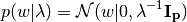
参数
以及  的先验分布规律被选择为
gamma
distributions
, the
conjugate prior for the precision of the Gaussian.
的先验分布规律被选择为
gamma
distributions
, the
conjugate prior for the precision of the Gaussian.
根据上面的定义得到的模型被称为 Bayesian Ridge Regression。 它和经典的
Ridge模型是相似的。
参数 ,
以及
在模型拟合过程中被联合估计出来。
余下的超参数包括gamma先验分布的参数
和
他们通常被选择为
non-informative. 这些参数通过最大化边际似然函数(marginal log likelihood )来估计得到。
默认情况下： 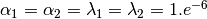.
以下代码展示了贝叶斯岭回归的用法:
>>> from sklearn import linear_model
>>> X = [[0., 0.], [1., 1.], [2., 2.], [3., 3.]]
>>> Y = [0., 1., 2., 3.]
>>> clf = linear_model.BayesianRidge()
>>> clf.fit(X, Y)
BayesianRidge(alpha_1=1e-06, alpha_2=1e-06, compute_score=False, copy_X=True,
fit_intercept=True, lambda_1=1e-06, lambda_2=1e-06, n_iter=300,
normalize=False, tol=0.001, verbose=False)
模型拟合完成后，它就可以用来预测新的值:
>>> clf.predict ([[1, 0.]])
array([ 0.50000013])
模型的权重
可以如下获得:
>>> clf.coef_
array([ 0.49999993, 0.49999993])
受贝叶斯框架的影响, 此处找到的权重与 普通最小二乘法 所找的权重稍微有些不一样。然而，贝叶斯岭回归对于病态问题更加鲁棒。
参考文献
- More details can be found in the article Bayesian Interpolation by MacKay, David J. C.
1.1.9.2. 自动关联确定(ARD)¶
ARDRegression 与 贝叶斯岭回归非常相似,
但是ARD能够获得更加稀疏的回归权重系数
[1]
[2].
ARDRegression
在权重,
上加入不同的先验分布假设，丢掉了贝叶斯岭回归中的球形高斯的假设。
与贝叶斯岭回归的球形高斯假设不同,
上的分布被假定为坐标轴平行的椭圆形高斯分布。
这意味着每一个权重 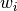 是从高斯分布中抽取的,此高斯分布以0为中心，以 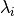为精度:
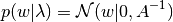
其中，对角矩阵定义了椭圆形高斯分布的各个维度方向的主轴： 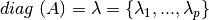。
与贝叶斯岭回归做对比,ARD中
的每个坐标有它自己的标准差
 .
在所有的
上的先验概率被选择为相同的伽马分布，通过超参数
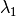
和 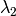来确定.
.
在所有的
上的先验概率被选择为相同的伽马分布，通过超参数
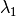
和 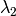来确定.
参考文献:
| [1] | Christopher M. Bishop: Pattern Recognition and Machine Learning, Chapter 7.2.1 |
| [2] | David Wipf and Srikantan Nagarajan: A new view of automatic relevance determination. |
1.1.10. Logistic 回归¶
1.1.11. 随机梯度下降(SGD)¶
随机梯度下降法(SGD)是一个用于拟合线性模型的简单而非常有效的方法，尤其在样本数量和特征数量非常
庞大的情形下。
partial_fit 方法
允许 核内或核外学习(only/out-of-core learning)。
类SGDClassifier
和类SGDRegressor
提供了使用不同的(凸)损失函数以及正则化惩罚因子来拟合线性模型用于分类和回归的功能。
比如,
SGDClassifier
可以使用 loss="log"
拟合一个logistic回归模型，同时也可以使用
loss="hinge"
拟合一个线性支持向量机。
更详细的介绍
1.1.12. 感知器¶
感知器(Perceptron)
是另一个适用于大规模学习问题的简单算法。默认情况下，
- 它无需设定一个学习率.
- 它无需正则化 (penalized).
- 它仅仅在犯错误的地方更新模型.
还有另外一个特点是在使用hinge损失函数的情况下，感知器的训练要比SGD稍快一点；而且最终的结果 也更加稀疏。